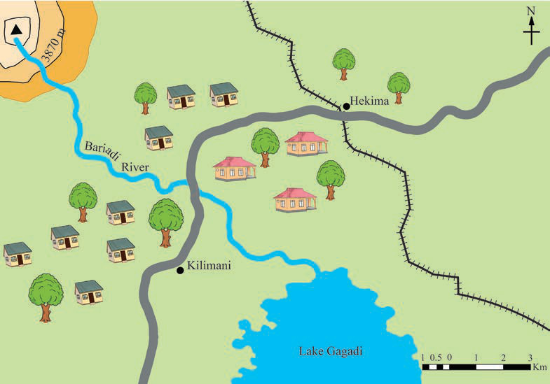

Activity 6
Observe Figure 20, then answer the following questions:

Questions
1.
Use a thread to calculate the distance from Kilimani to
Hekima.
2.
Use a piece of paper to calculate the length of the railway.
3.
Use a pair of divider to calculate the length of river
Bariadi from the mountain peak to Lake Gagadi.